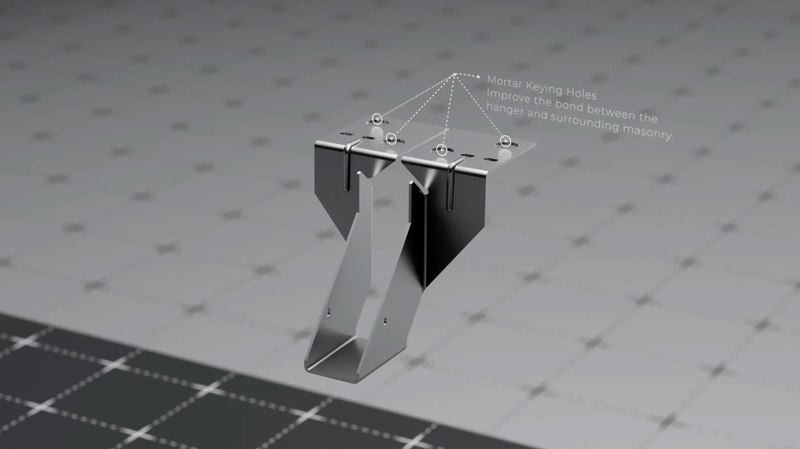

Dịch vụ render 3D sản phẩm: cần gì, mất bao lâu

Dịch vụ render 3D sản phẩm là việc dựng lại món hàng trong phần mềm ba chiều rồi kết xuất ra ảnh hoặc video dùng được cho trang bán, bao bì, hồ sơ kỹ thuật và quảng cáo. Bạn đặt dịch vụ này khi món chưa sản xuất xong, khi cần nhiều phiên bản màu và nhiều tỉ lệ khung từ cùng một bối cảnh, hoặc khi cần những dạng ảnh mà máy ảnh không chụp được như ảnh nổ linh kiện và ảnh cắt lớp. Nếu món đã có mẫu hoàn thiện và bạn chỉ cần một hai ảnh nền trắng, chụp thật vẫn nhanh hơn và rẻ hơn.
Bài này nói rõ các dạng ảnh thường được đặt, bạn cần gửi gì để nhận một báo giá dựng 3D sản phẩm có cơ sở, quy trình đi qua những mốc duyệt nào, mất bao lâu, điều gì làm giá tăng và cách cắt bớt phần không cần thiết. Chúng tôi không nêu con số cụ thể vì giá đổi theo từng dự án, nhưng sẽ nói thẳng các yếu tố cấu thành.
Dịch vụ render 3D sản phẩm nhận những dạng ảnh nào
Gọi tên đúng dạng ảnh bạn cần là cách rút ngắn vòng báo giá nhanh nhất. Năm dạng dưới đây chiếm phần lớn yêu cầu thực tế.
Ảnh nền trắng và nền đơn sắc
Dạng cơ bản nhất, dùng cho trang bán và sàn thương mại điện tử. Yêu cầu khó nhất ở đây không phải bố cục mà là bề mặt: nhựa phải ra nhựa, kim loại phải ra kim loại. Nền trắng không che được lỗi vật liệu, nó phơi ra hết.
Ảnh bối cảnh
Món được đặt trong một khung cảnh có chất liệu nền, bóng đổ và đạo cụ. Dạng này bán cảm giác sử dụng chứ không bán thông số, nên tốn thời gian ở khâu dựng bối cảnh nhiều hơn khâu dựng chính món.
Ảnh nổ linh kiện và ảnh cắt lớp
Các bộ phận được tách rời trong không gian hoặc thân sản phẩm được cắt để thấy bên trong. Đây là dạng máy ảnh không chụp được, nên cũng là lúc 3D không có đối thủ. Dạng này đòi bản vẽ kỹ thuật đầy đủ, vì mỗi chi tiết bên trong đều phải đúng.
Ảnh có chú thích kỹ thuật
Ảnh kèm đường chỉ và nhãn tên bộ phận, dùng cho hồ sơ sản phẩm, catalogue công nghiệp và tài liệu đấu thầu. Phần hình chỉ là một nửa công việc, nửa còn lại là chốt đúng tên gọi và đơn vị đo với phía kỹ thuật của bạn.
Hình động ngắn
Một shot quay quanh món, một đoạn mở nắp hoặc một cơ cấu hoạt động. Khối lượng công việc nhảy bậc so với ảnh tĩnh vì mỗi giây là hai mươi tư tới ba mươi khung. Các mốc duyệt của một shot nằm trong bài quy trình dựng TVC 3D.

Khi nào render 3D hợp hơn chụp thật
Câu trả lời thật thà là tuỳ món và tuỳ số lượng ảnh. Bảng dưới đây là cách chúng tôi tự so trước khi nhận việc, kể cả khi kết luận là khách nên đi chụp.
| Tình huống | Chụp ảnh thật | Render 3D | Kết hợp hai cách |
|---|---|---|---|
| Món chưa có mẫu hoàn thiện | Không làm được | Làm được từ bản vẽ | Không cần thiết |
| Một tới hai ảnh nền trắng | Nhanh và rẻ hơn | Tốn hơn vì phải dựng từ đầu | Không cần thiết |
| Nhiều phiên bản màu | Phải chụp lại từng màu | Đổi màu trên cùng bối cảnh | Chụp một màu, render các màu còn lại |
| Nhiều tỉ lệ khung cho từng kênh | Phải chụp lại hoặc cắt ảnh | Kết xuất lại từ cùng cảnh | Hợp khi đã có sẵn ảnh chụp tốt |
| Ảnh nổ linh kiện, ảnh cắt lớp | Gần như không làm được | Đúng việc của 3D | Không cần thiết |
| Cần người thật tương tác với món | Đúng việc của chụp | Tốn và dễ ra hình giả | Chụp người, ghép món dựng 3D |
| Sửa hình nhiều vòng sau khi chốt | Phải dựng lại set | Sửa trong file, kết xuất lại | Hợp khi phần sửa chỉ ở món |
Dòng cuối là lý do phổ biến nhất khiến các đội marketing chuyển sang 3D, và nó cũng là dòng dễ bị đánh giá thấp nhất khi so giá lần đầu. Cách so giữa freelancer, studio và agency cho phần việc này nằm trong bài studio 3D là gì và chọn thế nào.
Chụp thật bán cho bạn một lần bấm máy. Render 3D bán cho bạn một bối cảnh đã dựng, dùng lại được cho mọi màu, mọi khung và mọi vòng sửa về sau.
Bạn cần gửi gì để nhận báo giá dựng 3D sản phẩm
Một báo giá có cơ sở cần đủ đầu vào. Gửi thiếu thì bên nhận việc phải báo giá theo trường hợp xấu nhất, và bạn là người chịu phần dự phòng đó.
- Bản vẽ kỹ thuật hoặc file CAD, nếu có, ở định dạng bất kỳ mà bên bạn đang dùng.
- Ảnh chụp mẫu thật ở mặt trước, mặt sau, hai cạnh và mặt đáy, kể cả ảnh điện thoại.
- Số đo chính của món, tối thiểu là dài, rộng, cao và đường kính các phần tròn.
- Mã màu và tên vật liệu từng bộ phận, không chỉ nói nhựa đen hay kim loại.
- File nhãn và logo ở dạng vector, kèm vị trí dán trên thân.
- Danh sách ảnh cần giao, mỗi ảnh một dòng, kèm tỉ lệ khung của từng ảnh.
- Một câu nói rõ ảnh dùng ở đâu: sàn bán, bao bì in, màn hình LED hay hồ sơ kỹ thuật.
Dòng cuối quan trọng hơn vẻ ngoài của nó. Ảnh cho bao bì in cần độ phân giải và không gian màu khác ảnh cho trang bán, và biết trước thì không phải kết xuất lại lần hai. Các dạng đầu ra tương ứng được liệt kê ở trang dịch vụ render 3D sản phẩm, còn dạng bộ ảnh hoàn chỉnh thì xem ở dự án render sản phẩm.
Quy trình và các mốc duyệt
Quy trình tử tế chia việc thành chặng có điểm duyệt, để sai sót bị bắt ở chặng rẻ chứ không ở chặng đắt.
Chặng một: khối thô và góc máy
Bạn nhận hình khối xám chưa có vật liệu, đủ để duyệt tỉ lệ và góc nhìn. Hãy khó tính nhất ở đây. Sửa góc máy tại chặng này mất vài giờ, sửa sau khi đã làm vật liệu và ánh sáng mất vài ngày.
Chặng hai: vật liệu và ánh sáng
Bề mặt được gán chất liệu, đèn được đặt, bạn nhận bản kết xuất thử ở độ phân giải thấp. Việc của bạn ở chặng này là so với mẫu thật trong tay, nhất là màu và độ bóng.
Chặng ba: kết xuất cuối và hậu kỳ
Kết xuất ở độ phân giải thật, chỉnh tương phản và màu, xuất đủ các tỉ lệ khung đã thống nhất. Chặng này gần như không nên có yêu cầu sửa về bố cục nữa, vì mọi thay đổi bố cục đều kéo theo kết xuất lại.
Nếu bạn muốn hiểu phía trong mỗi chặng người làm đang làm gì, nội dung từng khâu được mô tả theo góc người học trong bài khoá học dựng hình sản phẩm.

Mất bao lâu, nói theo khoảng
Ước lượng từ các dự án chúng tôi đã làm, với điều kiện đã nhận đủ bản vẽ và mẫu ngay từ đầu.
Món hình khối rõ ràng, ba tới năm ảnh tĩnh: khoảng một tới hai tuần. Ví dụ là món vỏ nhựa hoặc kim loại ít chi tiết nhỏ.
Món nhiều chi tiết hoặc nhiều chất liệu trong suốt: dài hơn đáng kể, vì kính và chất lỏng tốn cả thời gian dựng lẫn thời gian kết xuất. Trang sức là ví dụ rõ nhất, xem các bộ ở dự án render trang sức.
Thêm một shot hình động ngắn: cộng thêm ít nhất một tuần nữa so với bộ ảnh tĩnh tương ứng, và nên quyết ngay từ đầu chứ đừng thêm vào giữa dự án.
Đây là ước lượng, không phải cam kết. Biến số khó đoán nhất không nằm ở phía kỹ thuật mà ở số vòng duyệt nội bộ bên phía bạn. Gom phản hồi của mọi người liên quan thành một lần thay vì gửi nhỏ giọt là cách rút ngắn dự án mà không tốn thêm đồng nào.
Điều gì làm báo giá tăng lên
Bốn yếu tố dưới đây quyết định phần lớn chi phí, và bạn kiểm soát được ba trong số đó.
Số shot cuối cùng. Không phải số ảnh bạn muốn xem thử, mà số ảnh bạn thật sự sẽ dùng. Cắt danh sách này là cách giảm chi phí hiệu quả nhất và hầu như không ai làm trước khi hỏi giá.
Độ phức tạp bề mặt. Kính, chất lỏng, kim loại xước và nhãn in trong suốt tốn hơn nhựa nhám nhiều lần, cả ở khâu dựng lẫn khâu kết xuất.
Chất lượng đầu vào. Có file CAD thì khâu dựng khối ngắn lại rất nhiều. Chỉ có ảnh chụp và vài số đo thì phần dựng phải suy luận, và suy luận luôn tốn thời gian hơn đọc bản vẽ.
Số vòng sửa. Hãy hỏi thẳng một vòng sửa được định nghĩa thế nào và vòng thứ bao nhiêu thì tính thêm. Đây là nguồn tranh chấp phổ biến nhất trong loại việc này.
Những lúc chưa nên đặt dịch vụ render 3D sản phẩm
Ba tình huống dưới đây, trả tiền bây giờ là lãng phí, và chúng tôi nói điều này cả khi người hỏi đang muốn đặt hàng.
Thiết kế còn đang đổi. Nếu hình dáng món còn sửa trong vài tuần tới, hãy chờ. Dựng theo bản chưa chốt nghĩa là trả tiền hai lần cho cùng một việc.
Bạn chỉ cần một ảnh nền trắng của món đã có sẵn. Thuê chụp là lựa chọn đúng. Một studio tử tế sẽ nói với bạn điều này thay vì nhận việc.
Chưa biết ảnh dùng ở đâu. Chưa rõ kênh và tỉ lệ khung thì danh sách ảnh sẽ phình ra trong lúc làm, và mỗi lần phình là một lần phát sinh. Chốt mục đích trước, đặt hàng sau.
Nếu bạn muốn giữ một người trong nhà làm được phần dựng khối và sửa nhỏ, còn phần hình cuối thuê ngoài, hai hệ ở trang khoá học 3D Blender ghi rõ đầu ra từng tuần, và phần chọn hướng trong cẩm nang học Blender nói thẳng những việc một người tự học làm được và chưa nên nhận.
Câu hỏi thường gặp về dịch vụ render 3D sản phẩm
Dịch vụ render 3D sản phẩm cần tôi gửi những gì?
Tối thiểu là bản vẽ kỹ thuật hoặc file CAD, ảnh chụp mẫu thật ở nhiều mặt, mã màu và thông tin vật liệu, file nhãn ở dạng vector, và một câu nói rõ ảnh sẽ dùng ở đâu. Thiếu bản vẽ thì vẫn làm được từ ảnh chụp kèm số đo, nhưng thời gian dài hơn và sai số tỉ lệ cao hơn.
Render 3D sản phẩm có rẻ hơn chụp ảnh thật không?
Không phải lúc nào cũng rẻ hơn. Một hai ảnh nền trắng của món đã có mẫu hoàn thiện thì chụp thật thường nhanh và rẻ hơn. Render 3D có lợi khi món chưa sản xuất xong, khi cần nhiều phiên bản màu hoặc nhiều tỉ lệ khung, khi cần ảnh nổ linh kiện, hoặc khi hình phải sửa nhiều vòng.
Một bộ ảnh render sản phẩm mất bao lâu?
Ước lượng là khoảng một tới hai tuần cho ba tới năm ảnh của món có hình khối rõ ràng, tính từ lúc nhận đủ bản vẽ và mẫu. Món nhiều chi tiết nhỏ hoặc cần hình động thì dài hơn, và biến số khó đoán nhất là số vòng duyệt bên phía khách.
Báo giá dựng 3D sản phẩm thường tính theo gì?
Cách phổ biến là tính theo số shot cuối cùng, kèm ghi rõ số vòng sửa được bao gồm. Bốn thứ đẩy giá lên là số shot, độ phức tạp bề mặt, hình tĩnh hay hình động, và số vòng sửa. Một báo giá tử tế tách riêng từng mục thay vì gộp thành một con số duy nhất.
Ảnh render có bị coi là quảng cáo không trung thực không?
Chỉ khi hình thể hiện sai sản phẩm thật. Nguyên tắc chúng tôi giữ là hình phải khớp với món sẽ giao tới tay người mua: đúng tỉ lệ, đúng màu theo mã, đúng chất liệu. Làm bề mặt bóng hơn thực tế hoặc bỏ bớt chi tiết gây xấu là chỗ dễ vượt ranh giới, nên cần chốt bằng mẫu thật ở vòng duyệt.
Nếu bạn đang có một món cần ra hình, gửi cho chúng tôi bản vẽ hoặc vài ảnh mẫu kèm danh sách ảnh cần giao và nơi ảnh sẽ xuất hiện. Chúng tôi báo lại thời gian và chi phí, và nói thẳng nếu chụp thật là lựa chọn hợp hơn cho trường hợp của bạn. Muốn xem cách chọn nơi làm trước khi hỏi giá thì đọc bài studio 3D là gì và chọn thế nào.
Đọc tiếp


Muốn được sửa bài trực tiếp?
Coaching 1:1 online, đồng hành trọn một năm. Để lại thông tin, tôi xem qua và tư vấn bạn nên bắt đầu từ đâu.
Đăng ký tư vấn